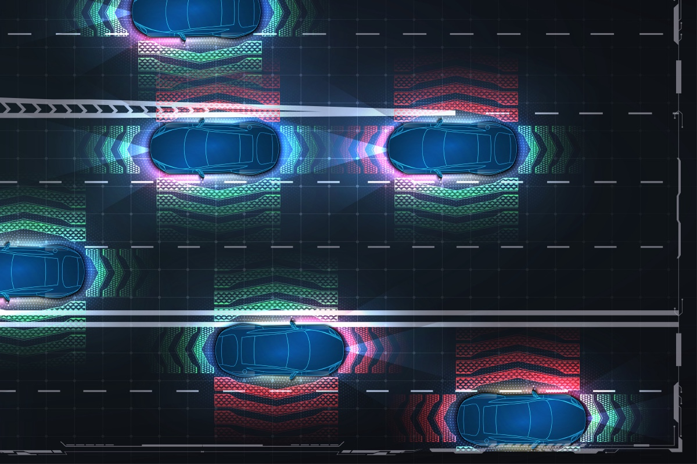

ADAS Calibration in Southampton, PA
Your car's safety systems only work if their cameras and sensors are aimed exactly where the manufacturer aimed them. We calibrate them in-house, as part of the repair, and we follow the factory procedure for your vehicle. If your car has been in an accident or needs a windshield, call before you assume calibration is handled.
- Free estimates
- Insurance paperwork handled
- ASE and I-CAR Gold Class certified
- Detailed after every repair
- Free estimates
- Insurance paperwork handled
- ASE and I-CAR Gold Class certified
- Detailed after every repair
What ADAS Actually Is
ADAS stands for Advanced Driver Assistance Systems. In plain terms, it is the set of features that watch the road with you: lane departure warning, automatic emergency braking, adaptive cruise control, blind-spot monitoring, rear cross-traffic alert, and more. Those features see the world through cameras and sensors mounted on your car. A camera behind the windshield. Radar behind the front bumper. Sensors in the mirrors and the rear bumper cover. Each one was aimed at the factory to a precise position, down to fractions of a degree, and everything the system decides starts from that aim.
Why Calibration Exists
A repair can move those cameras and sensors, or move the parts of the car they are mounted to. New windshield, new camera position. Bumper off and back on, radar disturbed. Suspension work or a wheel alignment, and the whole car now sits differently than the sensors expect.
Calibration is the process of re-aiming every affected camera and sensor back to the manufacturer's exact specification. Skip it, and a system can look at the wrong piece of road while telling you nothing is wrong. That is the part most drivers never hear: a sensor that is off does not usually announce itself. The features still switch on. The warning light stays dark. The aim is simply wrong.
When Calibration Is Required
The manufacturer's repair procedures decide, not guesswork and not a dashboard light. We pull the procedure for your exact vehicle and follow it. As a rule, calibration is required after:
- a windshield replacement on a vehicle with a camera behind the glass;
- removing or replacing a bumper cover that holds radar or sensors;
- replacing any camera or sensor, or the part it mounts to;
- suspension or steering repairs that change how the car sits;
- a wheel alignment on many newer vehicles;
- structural collision repairs that change the vehicle's geometry.
If your repair touches any of those and nobody has mentioned calibration, that is worth a phone call.
Static, Dynamic, or Both
There are two ways a calibration gets done, and the factory procedure for your vehicle says which one it needs.
A static calibration happens inside the shop. The vehicle is positioned on a level floor at measured distances from calibration targets, and the system is re-aimed against those targets under controlled conditions.
A dynamic calibration happens on the road. The vehicle is driven along a prescribed route at prescribed speeds while the system relearns its aim from lane lines and real traffic.
Some vehicles need one, some need both, and the order can matter. That is one more reason this work follows the written procedure rather than habit.
Done In-House, as Part of the Repair
We perform ADAS calibration in-house at our Southampton facility. Your car does not get shuttled to a dealer and back, and calibration is not an afterthought bolted onto the end of a repair. It is scheduled inside the repair itself, so the car that comes back to you is finished, not almost finished.
Every calibration starts and ends with a scan. We scan the vehicle before work begins and map which systems are affected, and we scan again when the work is done. You get the documentation. At Tri-County Collision, we treat calibration as a safety-critical step, not an add-on.
Insurance and What It Costs
When insurance is paying for the repair, calibration belongs on the claim. It is part of returning the vehicle to the condition the manufacturer intended, and we handle that conversation with your insurer the same way we handle the rest of the claim.
What calibration costs depends on which systems your vehicle has and what the factory procedure requires, so we will not quote a number sight unseen and neither should anyone else. Estimates are free and there is no obligation.
Why Choose Tri-County Collision for ADAS Calibration
- Calibration performed in-house at our Southampton facility
- Factory repair procedures pulled for your exact vehicle
- Factory-certified collision center for 12 brands
- Pre-scan and post-scan on every calibration, documented
- We work directly with your insurance company
- Family owned and operated
- Lifetime warranty on all repair work
- Free estimates and free consultations
Most drivers hear about calibration for the first time after a crash, which is the worst moment to be learning it. If your car is in for a repair anywhere, ask who is calibrating it and to what procedure. And if the answer is vague, call us at (215) 322-5350.
We will get you back on the road with every camera and sensor aimed where the manufacturer aimed it.
Estimates are free and there is no obligation
ADAS Calibration FAQ
Do I need calibration after a windshield replacement?
If your vehicle has a camera behind the windshield for features like lane departure warning or automatic emergency braking, then yes, almost certainly. The camera's aim depends on the glass it looks through and the mount it sits on, and the manufacturer's procedure for a replacement includes recalibration.
My dashboard shows no warning light. Is calibration still needed?
A dark dashboard does not mean the aim is right. A camera or sensor that is off by a degree will usually keep working without complaint, just aimed at the wrong piece of road. Whether calibration is needed is decided by the manufacturer's repair procedure for the work that was done, not by the warning lights.
How long does ADAS calibration take?
How long ADAS calibration takes depends on the vehicle and on whether the procedure calls for a static calibration, a dynamic one, or both. Some take under an hour and some add several hours to a repair. Because we calibrate in-house, the time is built into the repair schedule rather than added to it as a separate appointment.
What does ADAS calibration cost?
What ADAS calibration costs depends on which systems your vehicle carries and what the factory procedure requires, so an honest answer starts with your VIN, not a flat rate. Estimates at Tri-County Collision are free, and when insurance is paying for the repair, calibration belongs on the claim.
Can I skip calibration if the car seems to drive fine?
Driving fine is not the test. The systems that calibration protects are the ones that act in the moments before a crash, and a sensor aimed wrong can act on wrong information precisely then. We follow the manufacturer's procedure for your vehicle, and we treat calibration as a safety-critical step, not an option.
Do you calibrate my brand of car?
We work on foreign and domestic vehicles alike, and we are a factory-certified collision center for 12 brands: INFINITI, Nissan, Hyundai, Kia, Acura, Honda, GM, Chrysler, Ford, Dodge, Subaru and Jeep. For every calibration we pull the manufacturer's own procedure for your exact vehicle.